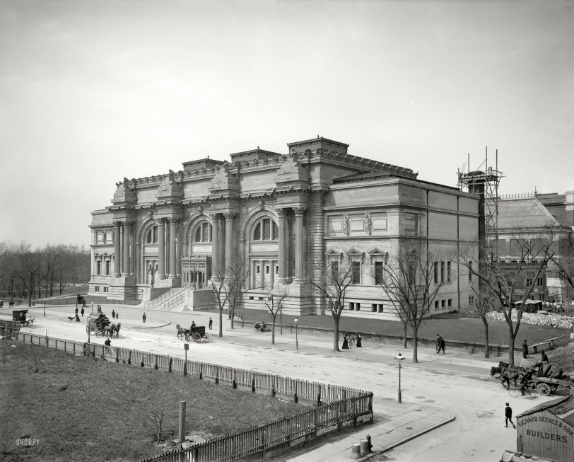

The MET was built between 1895 and 1926. It was funded by the wealthy families of New York such as J.P. Morgan who engineered the financial panics of 1893 and 1907, shaping the very creation of the Federal Reserve. John D. Rockefeller also funded its creation and his family would go on to fund the United Nations, own the land under its Manhattan headquarters, and stamp their name on institutions like Rockefeller Center. Both families funded the museum and saw the power that came with controlling the public's interactions with history and art.

The Metropolitan Museum of Art